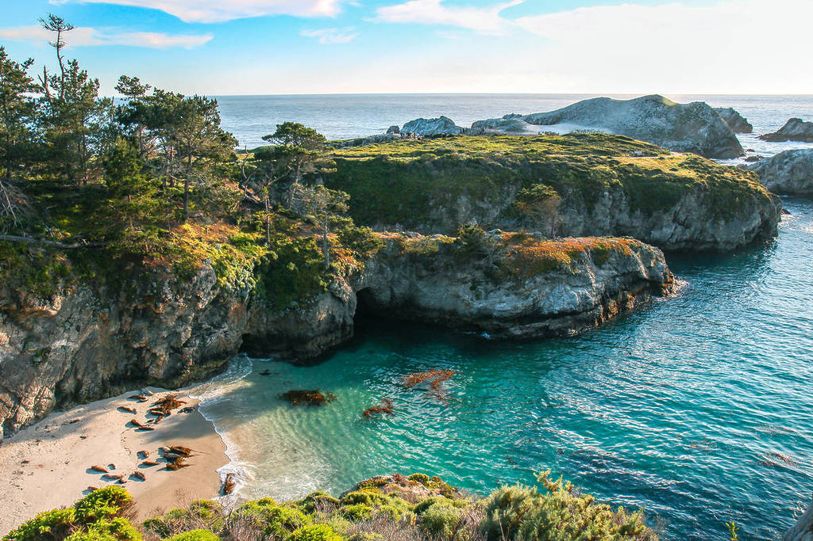

Hiking: Point Lobos
A page about one of California's best natural state reserves.
Point Lobos became a state park in 1933 and is often refered to as the "Crown Jewel" of California parks.

1941: the U.S. Army Defense Squad used the Whaler's Cabin as HQ after the Japanese attack on Pearl Harbor.
Interesting Facts about Point Lobos
- More than 600,000 visitors explore Point Lobos each year!
- There are 17 different hiking trails on the reserve.
- The marine reserve, which holds 750 acres, was one of the first of its kind.
Built by YOUR NAME · BMIS 235